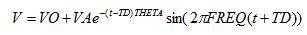
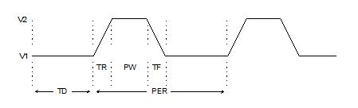
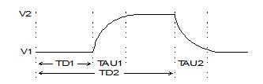
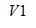
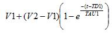
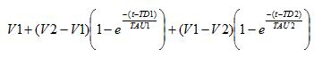
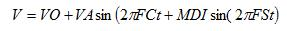

Generator Properties
Overview
This dialogue allows configuration of all generator properties. The
dialogue form is dynamic and will show/hide properties according to the
type of generator selected.
Options
Generator Name
Specify a name for the generator. Once you have manually changed the
name of a generator, ISIS will never replace it, even if you move the
generator to a new net. If you want a generator to revert to automatic
naming, clear its name to the blank string and then click OK.
Analogue Types
DC
This is used to generate a constant DC voltage or current Level.
Sine
This is used to produce continuous sinusoidal waves at a fixed frequency.
The output level is specified as a peak amplitude (VA) with optional
DC offset (VO). The amplitude may also be specified in term of RMS or
peak-peak values.
The frequency of oscillation can be given in Hz (FREQ), or as
a period (PER), or in terms of the number of cycles over the entire graph.
A phase shift can be specified in either degrees (PHASE) or as a time
delay (TD). In the latter case, oscillation does not start until the specified
time.
Exponential decay of the waveform after the start of oscillations is
specified by the damping factor, THETA.
Mathematically, the output is given by:

for t >= TD. For t < TD the output is simply the offset
voltage, VO.
Pulse
This is used to produce a variety of repetitive input signals for analogue
analysis. Square, saw-tooth and triangular waveforms can be produced,
as well as single short pulses. Note that the rise and fall times cannot
be zero and so a truly square wave is not allowed. This is because instantaneous
changes in general are not allowed in PROSPICE. The operation of the pulse
generator is best described by the following diagram:

where
PER
- The period of the waveform. If none is specified, then FREQ is used
instead.FREQ The frequency of the waveform. This defaults to one period
for a transient analysis.
V1
- The low-level value of the output.
V2
- The high-level of the output.
PW
- The time for which the output is at V2 in each cycle. This does not
include TR and TF.
TR
- The rise time - time taken between LOW and HIGH in each cycle. This
defaults to 1ns.
TF
- The fall time - time taken between HIGH and LOW in each cycle. This
defaults to TR.
TD
- The delay time. The output of the generator starts at V1, and will remain
at this level for TD seconds.
Pwlin
This is used to produce analogue signals
which are too complicated for a pulse generator, or to reproduce
a measured waveform. The output waveform is described using pairs of values
for time and output magnitude. The output of the generator at intermediate
times is linearly interpolated between the given times.
If you have tabular data, you may find
it easier to use manual edit mode. In this case, each data point is specified
by a property of the form V(t). The following example shows how this works.
V(0)=0
V(2n)=0
V(3n)=1
V(5n)=1
V(6n)=0
If you have a large amount of data, you
may find it easier to use a FILE generator instead.
File
This is used to drive a circuit from an
analogue signal that is specified by a series of time points and data
values contained in an ASCII file. The ASCII file should be formatted
with one time/voltage pair on each line seperated by white space (spaces
or tabs , not commas ). The time values must be in ascending order and
all values must be simple floating point numbers ( no suffixes allowed
).
Example
The following example data file produces
three cycles of a saw-tooth waveform with rise time 0.9ms, fall
time 0.1ms and amplitude 1V.
0 0
9E-4 1
1E-3 0
1.9E-3 1
2E-3 0
2.9E-3 1
3E-3 0
Audio
This is used to drive a circuit from a Windows WAV file. In conjunction
with Audio Graphs they make it possible to hear the results of processing
a sound signal through a simulated circuit.
Exponent
This produces the waveform as an RC circuit
under charging and discharging conditions. . The parameters are best described
by the diagram below.

where the parameters are
V1 - The low-level value of the output.
V2 - The high-level of the output.
TD1 - The start time of the rise curve.
TAU1 - The time constant of the rise curve. This is
the time for the voltage to reach approximately 0.63 of its full potential.
TD2 - The start time of the fall curve. Note that TD2
is measured from zero.
TAU1 - The time constant of the fall curve.
Mathematically, the waveform is defined
in three sections:
0 to TD1

TD1 to TD2

TD2 to TSTOP

SFFM
This
produces a waveform that represents the result of frequency modulating
one sine-wave with another. Mathematically, this is represented as:

where the parameters are
VO
- The DC offset voltage.
VA
- The carrier amplitude.
FC
- The carrier frequency.
FS
- The signal frequency.
MDI
- The modulation index.
Random
This enables the injection of random noise into the circuit. The noise
can never be rigorously white or pink because the sample rate is limited.
But if the sample rate is around 10x the frequencies you're interested
in it's a pretty good approximation.
Filter Output: When this option
is selected an LPF is engaged, making the noise approximately pink, rather
than white. Also a more continuous waveform.
Random Seed: If this checkbox
is off, each generator gets it's own seed so they are all different but
repeatable between simulation runs.
The Mayday sample design under graph based simulation shows
how the random generator can be used.
EasyHDL
EasyHDL is a scriptable generator type based loosely on the BASIC programming
language but adds additional features specific for its application in
specifying test vectors. It is discussed in full in the topic on Scriptable
Generators in the main simulation help file and you'll find a series of
examples under the 'Generator Scripts' category in the samples browser.
Digital Types
- Single Edge - a single
transition from low to high or high to low.
- Single Pulse
- a pair of transitions in opposite directions which together form
a positive or negative pulse waveform. You can specify either the
times of each edge (start time and stop time) or the start time and
the pulse width.
- Clock
- a continuous pulse train of even mark-space ratio. You can specify
the starting value and the time of the first edge as well as the period
or frequency. The period specifies the time for a whole cycle, not
the width of a single mark or space.
- Pattern - This is the most
flexible and can, in fact, generate any of the other types. For larger
pulse trains consider using the pattern generator instrument which
can be scripted.
- Easy HDL - Use the EasyHDL
programming language to specify a signal chain for injection. See
the programming reference manual in the VSM Help file for more information.
Checkboxes
- Current Source? - Specify
a current source. This is not applicable to digital generators.
- Isolate Before? - Specify
whether or not a generator placed in the middle of a wire acts to
'break' the wire to which it is connected, isolating the net to which
the generator points from the net behind it. The check box has no
affect on a generator connected directly to a net by a single wire.
- Manual Edits? - Enables
manual editing of all the properties. Use this to enter parameterized
expressions for generator properties. Recommended for advanced users
only.
- Hide Properties? - Hides
the textual representations of the properties.
DC Properties
- Voltage - Specify
the constant output level. This can be either a Voltage (default)
or a current (select the 'Current Source?' radio button).
Sine Properties
- Offset - Specify the DC
offset for the sine wave.
- Amplitude - Specify the
amplitude as a half-wave value
- Peak - Specify the amplitude
as a peak to peak value.
- RMS - Specify the amplitude
as a RMS (Root Mean Squared ) value.
- Frequency - Specify the
frequency of oscillation in Hz.
- Period - Express the frequency
of oscillation as a period in seconds.
- Cycles/Graph - Express
the frequency of oscillation in terms of the number of cycles over
the entire graph.
- Time Delay - Express the
phase shift as a time delay in seconds. Oscillation does not start
until the specified time.
- Phase - Specify a phase
shift in degrees.
- Damping Factor - Specify
the rate of exponential decay of the waveform after the start
of oscillation.
Pulse Properties
- Initial (Low) Voltage -
Specify the low level value of the output
- Pulsed (High) Voltage -
Specify the high-level value of the output
- Start - Specify the start
time for the waveform
- Rise Time - Specify the
time taken between LOW and
HIGH in each cycle. This is
not permitted to be zero and so a truly square wave is not possible.
- Fall Time - Specify the
time taken between HIGH and
LOW in each cycle. This is
not allowed to be zero and so a truly square wave is not possible.
This defaults to the value for Rise Time.
- Pulse Width (Secs) - Specify
the time for which the output is HIGH
in each cycle. This does not include Rise Time and Fall Time. This
value can be zero if a triangle type waveform is required.
- Pulse Width (%) - Specify
the time for which the output is HIGH
as a percentage of the period. This does not include Rise Time and
Fall Time.
- Frequency - Specify the
frequency of the waveform in Hz.
- Period - Specify the period
of the waveform in seconds.
- Cycles/Graph - Specify
how many waveform cycles you want in the graph
Pwlin Properties
- Time/Voltages - Drag and
Drop Data Points on the Graph Editor. There must always be a point
at time zero, although it' y-value an be changed.
- X Min Scaling - Specify
the minimum value for the x-axis.
- X Max Scaling - Specify
the maximum value for the x-axis.
- Y Min Scaling - Specify
the minimum value for the y-axis.
- Y Max Scaling - Specify
the maximum value for the y-axis.
- Minimum rise/fall time
- Specify the minimum rise/fall time. Should you attempt to create
a vertical edge the Graph Editor will separate the two data points
by this value.
File Properties
- Data File - Enter the name
of the ASCII data file. The file should be in the same directory as
the design file unless a full path is specified. There is no default
extension for the file.
Audio Properties
- WAV Audio File - Selects
the filename of the audio file.The filename is assumed to have a default
extension of WAV, and should be located in the same directory
as the ISIS design file (DSN extension) unless a full path is specified
- Amplitude - Specify amplitude
as a half-wave value.
- Peak - Specify amplitude
as a peak-to-peak value.
- Offset - Specifies the
DC offset. If this is set to zero the output voltage will oscillate
about zero.
- Channel - For stereo WAV
files this specifies which channel is played, or whether to treat
the data as mono.
Exponent Properties
- Initial (Low) Voltage -
Specify the low-level value of the output.
- Pulsed (High) Voltage -
Specify the high-level value of the output.
- Rise Start time - Specify
the start time of the rise curve in seconds.
- Fall Start time - Specify
the start time of the fall curve in seconds. Note that this time is
measured from zero.
- Rise time constant - Specify
the time constant for the rise curve. This is the time for the voltage
to reach approximately 0.63 of it's full potential.
- Fall time constant - Specify
the time constant of the fall curve.
SFFM Properties
- Offset - Specify the DC
offset of the waveform.
- Amplitude - Specify the
carrier amplitude.
- Carrier Frequency - Specify
the carrier frequency in Hz.
- Modulation Index - Specify
the modulation index for the wave.
- Signal Frequency - Specify
the signal frequency in Hz.
Easy HDL Properties
- Assigned Script - Specify
the script to be executed by the generator. Normally this is the local
script (<LOCAL>) but it is possible to have other script blocks
on the schematic.
- Local Script - Type the
script you wish to execute (assuming assigned script is set to <LOCAL>)
- refer to VSM help for the programming reference manual and some
practical examples.
- Debug this Generator? -
Select this option if you wish to single step debug the script during
simulation. This will present a source window when the simulation
is paused allowing you to debug in the normal way.
Steady State Properties
Specify a State from those listed. The states are organised in
a centred array decreasing in strength from Power Rail High To Floating
and from Power Rail Low to Floating.
Single Edge Properties
- Positive (Low-to-High) Edge
- Specify a positive edge transition.
- Negative (High-to-Low) Edge
- Specify a negative edge transition.
- Edge At - Specify the time
in seconds at which the edge is to begin.
Single Pulse Properties
- Pulse Polarity - Select
the required polarity of the pulse.
- Start Time - Enter the
time in seconds at which you want the pulse to start.
- Pulse Width - Specify the
ovarall pulse width in seconds.
- Stop Time - Specify the
time in seconds at which you want the pulse to stop.
Clock Properties
- Clock Type - Select the
required polarity of clock phase.
- First Edge At - Specifies
the time in seconds at which the first clock edge occurs. Prior to
this time the generator stays in its initial state as specified by
the clock type.
- Frequency - Specifies the
clock frequency in Hz.
- Period - Specify the clock
period in seconds. The period specifies the time for a whole cycle,
not the width of a single mark or space.
Pattern Properties
- Initial State - This specifies
the value at time zero. It is also the value used when finding the
operating point in a mixed mode circuit.
- First Edge At - Specifies
the time in seconds when the pattern output starts. The output will
remain at the initial state value until this time is reached.
- Equal Mark/Space Timing?
- Indicates whether or not each step of the pattern will take the
same time or have a different time for high and low values.
- Pulse Width - If each step
takes the same time (specified by checking the Equal Mark/Space Timing?
checkbox ) this determines the pulse width. If there are different
times specified for high and low values this determines the
time for logic '1' values.
- 'Space' time - When there
are different times for high and low values (specified by unchecking
the Equal Mark/Space Timing? checkbox) this value determines the time
for logic ' 0 ' values.
- Continuous Sequence of Pulses
- Specifies that the output will run continuously until the end of
the simulation, repeating the pattern as many times as are necessary.
- Determine from Pattern Length
- Specifies that the output will run until the end of the pattern.
This option can only be selected when a specific pulse train is entered.
- Specific Number of Edges
- Specifies that the pattern is only to run for a specific number
of edges.
- Standard High-Low Pulse Train
- This indicates an alternating high-low-high-low sequence.
- Specific Pulse Train -
Specifies that a specified pattern string is to be enabled. Enables
the edit box below and permits the option of running the output until
the end of the pattern.